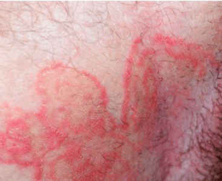
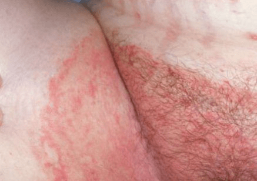

Tinea cruris, most commonly known as jock itch, is a fungal infection of the skin.
It belongs to a group of fungal skin infections called tinea. Like other tinea infections,
jock itch is caused by mold-like fungi, which are known as dermatophytes.
These microscopic fungi naturally live on the skin as well as on the hair and nails.
They’re typically harmless, but they can multiply quickly and cause infections when
they’re allowed to thrive in warm, moist areas. This is why jock itch usually develops
in the skin around the groin, inner thighs, and buttocks.
Jock itch is most common in men and adolescent boys. The infection causes a rash that
often itches or burns. The affected areas can also be red, flaky, or scaly.
Though jock itch can be bothersome, it’s typically a mild infection. Treating it quickly
will minimize symptoms and keep the infection from spreading. Most people find relief
simply by applying topical antifungal medications and by keeping the affected area clean
and dry.

